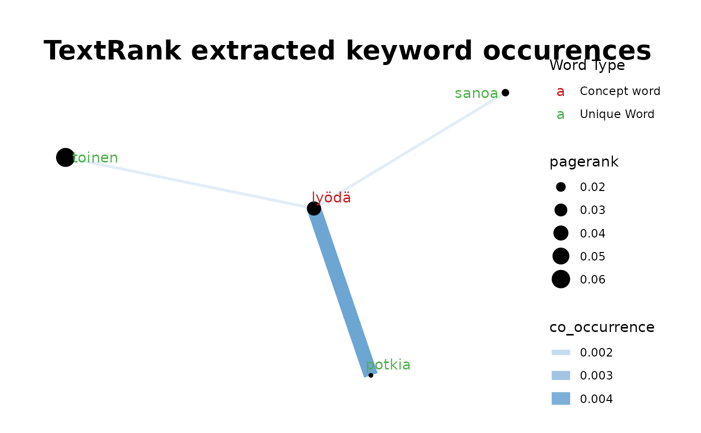
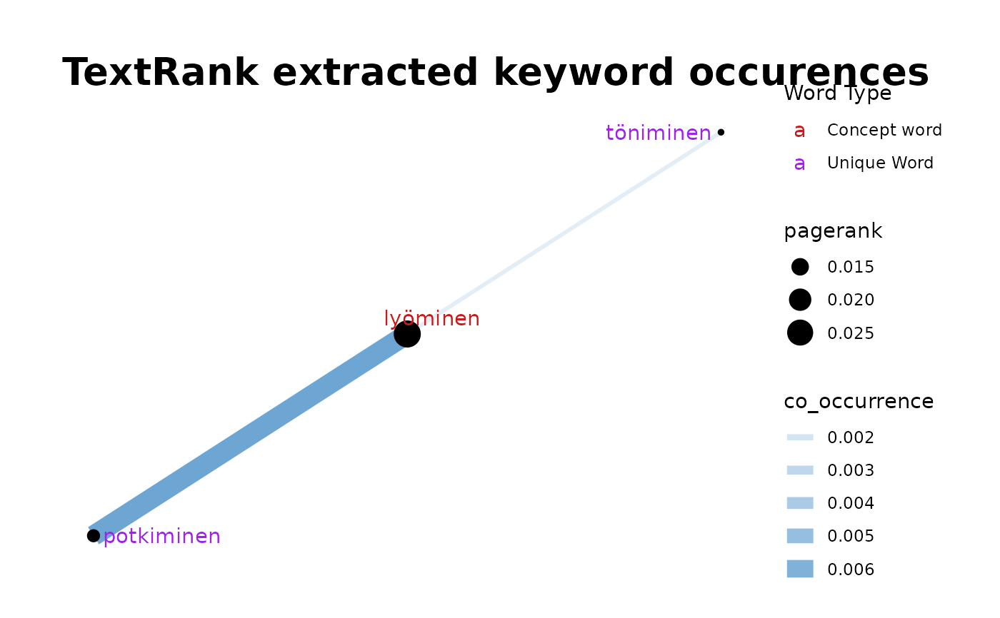

Concept Network- Plot comparison Concept Network
Source:R/05_comparison_concept_network.R
fst_cn_compare_plot.RdCreates a Concept Network plot from a list of edges and nodes (and their respective weights) which indicates unique words in this plot in comparison to another Network.
Usage
fst_cn_compare_plot(
edges,
nodes,
concepts,
unique_lemmas,
name = NULL,
concept_colour = "#cd1719",
unique_colour = "#4DAF4A",
min_edge = NULL,
max_edge = NULL,
min_node = NULL,
max_node = NULL,
title_size = 20
)Arguments
- edges
Output of `fst_cn_edges()`, dataframe of 'edges' connecting two words.
- nodes
Output of `fst_cn_nodes()`, dataframe of relevant lemmas and their associated pagerank.
- concepts
List of terms which have been searched for, separated by commas.
- unique_lemmas
List of unique lemmas, output of `fst_cn_get_unique()`
- name
An optional "name" for the plot, default is `NULL` and a generic title ("TextRank extracted keyword occurrences") will be used.
- concept_colour
Colour to display concept words, default is `"indianred"`.
- unique_colour
Colour to display unique words, default is `"darkgreen"`.
- min_edge
A numeric value for the scale of the edges, the smallest co_occurrence value for an edge across all Networks to be plotted together.
- max_edge
A numeric value for the scale of the edges, the largest co_occurrence value for an edge across all Networks to be plotted together.
- min_node
A numeric value for the scale of the nodes, the smallest pagerank value for a node across all Networks to be plotted together.
- max_node
A numeric value for the scale of the nodes, the largest pagerank value for a node across all Networks to be plotted together.
- title_size
size to display plot title
Examples
pos_filter <- c("NOUN", "VERB", "ADJ", "ADV")
e1 <- fst_cn_edges(fst_child, "lyödä", pos_filter = pos_filter)
e2 <- fst_cn_edges(fst_child, "lyöminen", pos_filter = pos_filter)
n1 <- fst_cn_nodes(fst_child, e1)
n2 <- fst_cn_nodes(fst_child, e2)
u <- fst_cn_get_unique_separate(n1, n2)
fst_cn_compare_plot(e1, n1, "lyödä", unique_lemma = u)

fst_cn_compare_plot(e2, n2, "lyöminen", u, unique_colour = "purple")
